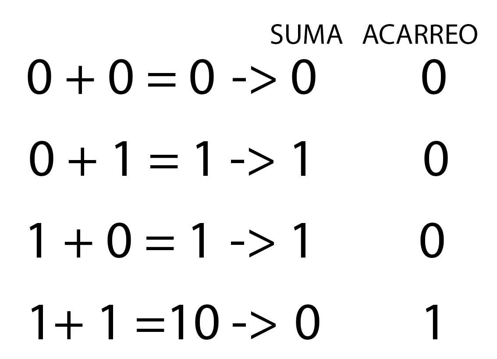
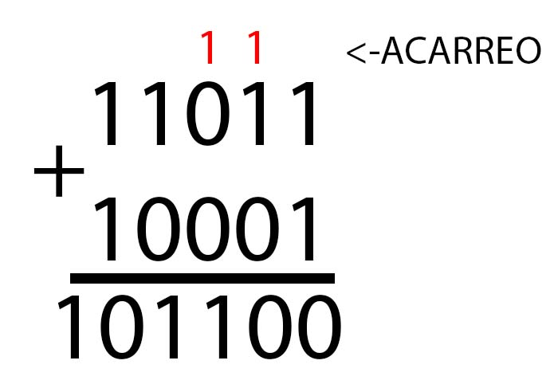
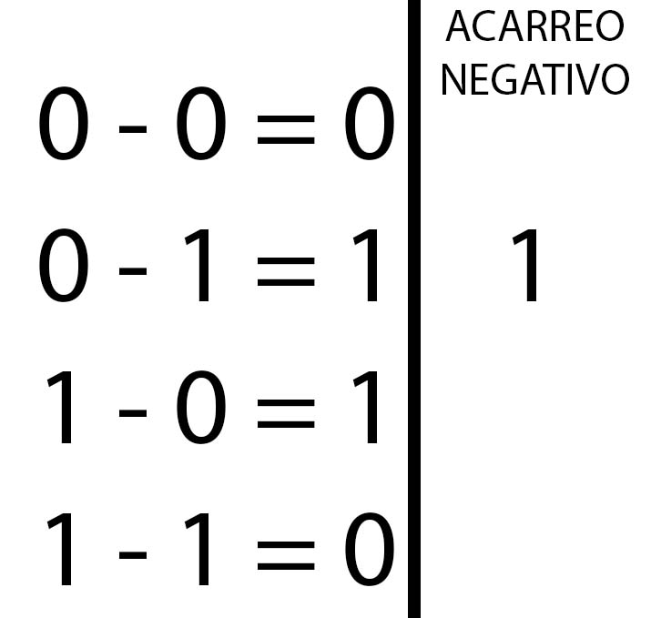
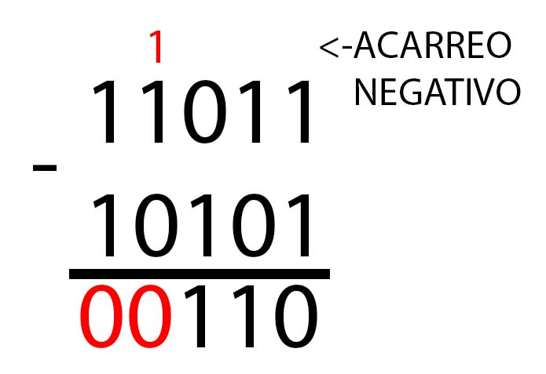

Análisis númerico
Es una rama de las mates que se encarga de diseñar algoritmos para simular aproximaciones de solución a problemas de análisis matemático.
Introducción
Este curso abarcará problemas de análisis númerico, algunas cosas las he visto en la universidad en una materia denominada métodos númericos y otras por pura curiosidad, resolveremos problemas de análisis, intentaré que todo esté en una sola página porque me parece más didactivo, además, intentaré graficar el porque de las aproximaciones que sacamos, el objetivo es que para el lector sea más sencillo aprender este tema.
Sistemas de númeración
Los sistemas de numeración son nuestra base para realizar operaciones aritmeticas, ya sabes, sumar, restar, multiplicar y dividir, la diferencia es que la mayoría de nosotros solo sabe hacerlo en el sistema de númeración decimal, mi trabajo es enseñarte estas operaciones para los sistemas binario, octal y hexadecimal.
Binario
Este sistema se compone, como su nombre lo indica, de 2 números, el 0 y 1, lo usamos en las computadoras más que nada, no te servirá de mucho saber esto pero es interesante saber como se cuenta con estos números, que también te ayudará a entender los tipos de información (como int32?) y como estas se relacionan con los bits, que simplemente es una unidad en este sistema.
Tomaremos una aproximación a uno de los sistemas que ya conoces, el decimal, la conversión la realizaremos con una tablita con la que aprendí.

Como te puedes dar cuenta, el 1 en este sistema indica un valor y para representar un valor más grande simplemente recorremos el uno a la izquierda, así podemos representar su igual en decimal, que es el sistema que ya conoces
Suma en binario
Para realizar una suma, haremos lo mismo que se hace en un sistema decimal, sumar XD.
Pero primero debes conocer 4 equivalencias básicas para la suma en binario.
Y listo, ya sabes sumar en binario 👍👍👍
Como podes darte cuenta, es así de sencillo, ahora como un ejemplo te dejo la siguiente imagen donde podes apreciar una suma sencilla
Resta en binario
Para restar en binario es sencillo, es como la suma, necesitas una tabla de reglas, pero acá tendrás un acarreo negativo.
Acá te dejo un ejemplo para que veas como funciona
Multiplicación en binario
Al igual que en la suma y la resta, acá tenemos 4 reglas básicas, te las dejo en una tabla
En fin, se multiplica igual que los decimales pero cuando hagas la suma, recuerda las reglas de la suma binaria